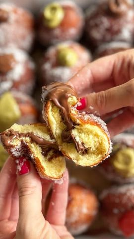

Miris krofni vraća me u ne tako daleku prošlost

Moja beleška
SačuvanoMiris krofni vraća me u ne tako daleku prošlost, budi posebne uspomene i jedno tiho nedostajanje... Bez obzira na to da li su posute šećerom ili punjene kremovima, džemom, vanilom – nijedna krofna nije kao one koje su vas nekada dočekivale na kućnom pragu. Juče sam obradovala svoju decu, a ako i vi želite da podelite takvu radost s nekim,
Sastojci
- evo recepta
Priprema
Umešajte sve sastojke sem putera i duže mesite testo. Ukoliko imate robot mikser neka to bude 10ak minuta na srednjoj jačini, a potom dodajte potpuno omekšao puter i mesite (mutite) sve dok testo ne krene da se odvaja sa ivica posude. Potom ga prebacite u pobeašnjenu činiju, pokrijte krpom i ostavite na toplom dok se ne uduplira. Nekih sat vremena. Nakon toga, podelite ga na 20 delova, formirajte 20 loptica, pa ga opet ostavite pokrivenog isto toliko da narasta. Ulje ugrejte, a potom temperaturu ringle podesite na nekih 6,5 od 9. (tj. nešto više od polovine) Vrele uvaljajte u mešavinu šećera, vanil šećera, pa punite kao na snimku. Možete ih naravno i samo posuti šećerom u prahu. Kakve 🍩 najviše volite..? Prijatno! 🌸
Originalni opis sa Instagrama
Miris krofni vraća me u ne tako daleku prošlost, budi posebne uspomene i jedno tiho nedostajanje... Bez obzira na to da li su posute šećerom ili punjene kremovima, džemom, vanilom – nijedna krofna nije kao one koje su vas nekada dočekivale na kućnom pragu. Juče sam obradovala svoju decu, a ako i vi želite da podelite takvu radost s nekim, evo recepta: •220 ml mlakog mleka •20 gr svežeg kvasca •2 jaja •50 gr šećera •1 kašičica soli •550 gr brašna •60 gr putera Umešajte sve sastojke sem putera i duže mesite testo. Ukoliko imate robot mikser neka to bude 10ak minuta na srednjoj jačini, a potom dodajte potpuno omekšao puter i mesite (mutite) sve dok testo ne krene da se odvaja sa ivica posude. Potom ga prebacite u pobeašnjenu činiju, pokrijte krpom i ostavite na toplom dok se ne uduplira. Nekih sat vremena. Nakon toga, podelite ga na 20 delova, formirajte 20 loptica, pa ga opet ostavite pokrivenog isto toliko da narasta. Ulje ugrejte, a potom temperaturu ringle podesite na nekih 6,5 od 9. (tj. nešto više od polovine) Vrele uvaljajte u mešavinu šećera, vanil šećera, pa punite kao na snimku. Možete ih naravno i samo posuti šećerom u prahu. Kakve 🍩 najviše volite..? Prijatno! 🌸 • • • #krofne #ukusnahrana #mirisdetinjstva #ljubavseljubavljuvraca #recept #mojirecepti